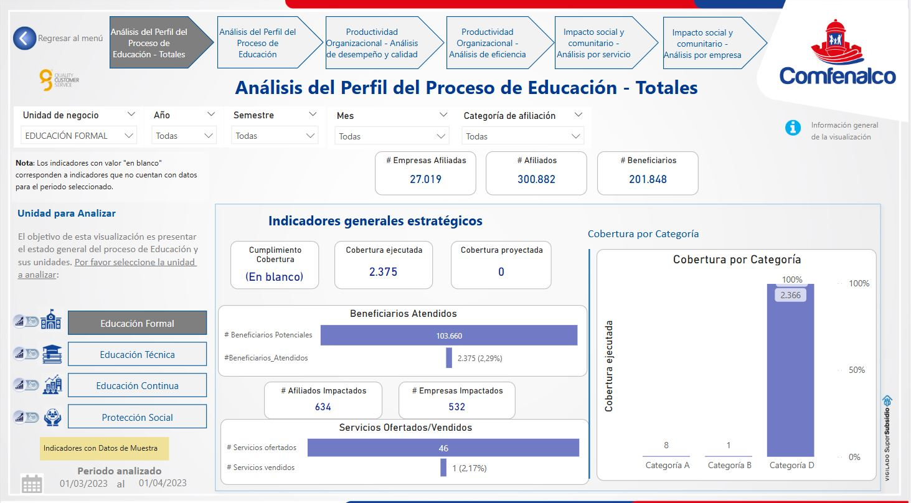
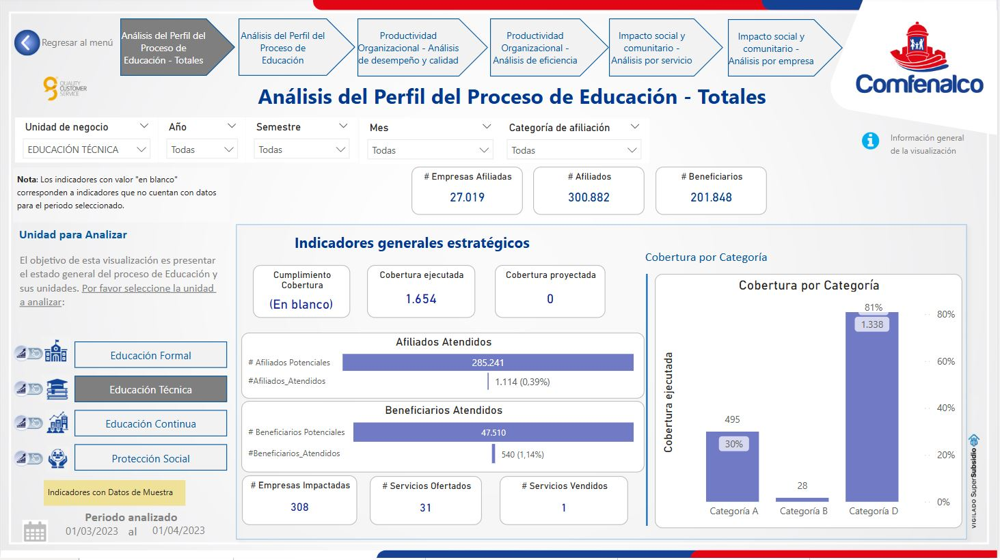
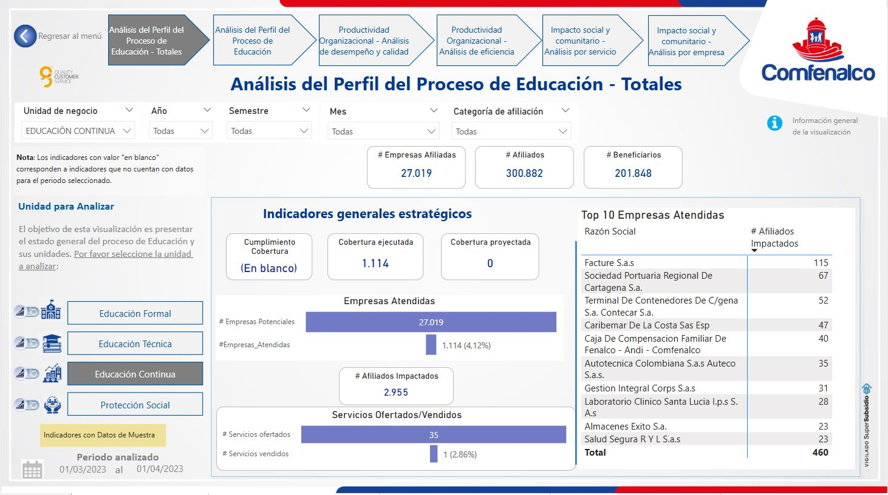
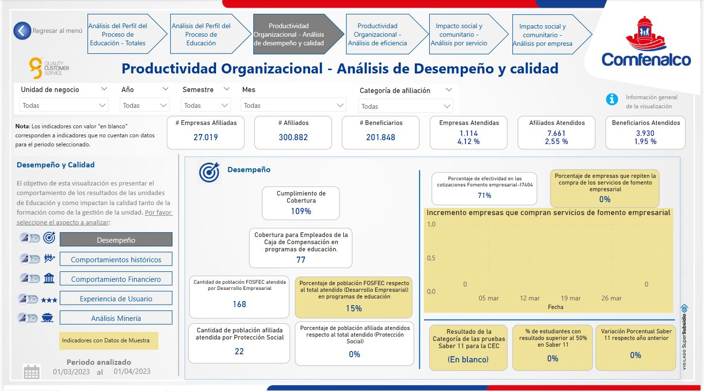
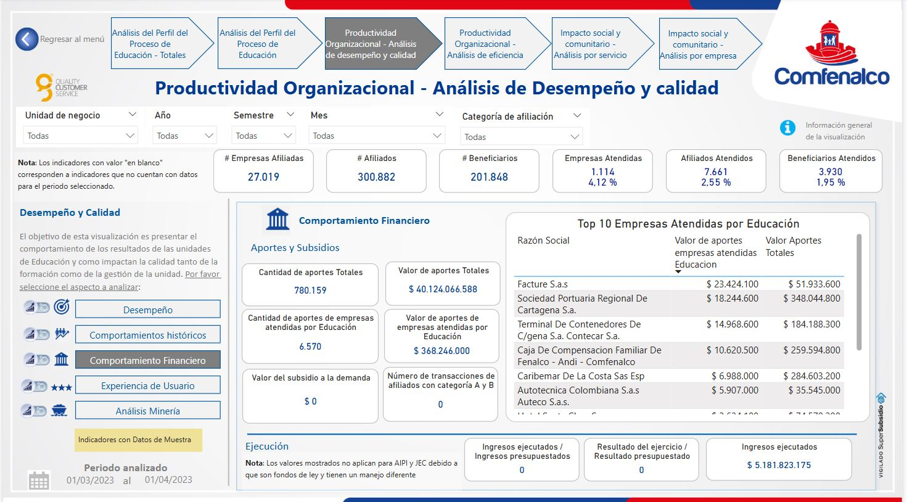

Tableros Analíticos del Proceso de Educación¶
Visión General de los Dashboards¶
El sistema de dashboards para el proceso de Educación ofrece una perspectiva integral, abarcando tanto indicadores operativos como métricas de impacto social. A través de diversas visualizaciones, se busca facilitar la toma de decisiones estratégicas y operativas, optimizando la gestión de las unidades de negocio. A continuación se describe la estructura y funcionalidades principales de cada visualización:
Análisis del Perfil del Proceso de Educación¶

Objetivo de la Visualización:
Proporcionar una visión integral del estado del proceso educativo, destacando indicadores clave y datos estratégicos que permiten evaluar el desempeño de cada unidad de negocio. Esto incluye análisis de empresas atendidas, afiliados, beneficiarios y la efectividad de los servicios ofrecidos.
Estructura y Elementos Principales:¶
-
Menú Superior de Navegación:
- Permite al usuario navegar entre distintos análisis estratégicos como Productividad Organizacional e Impacto Social y Comunitario.
- Facilita el acceso rápido a las diferentes visualizaciones sin perder contexto.
-
Panel Lateral Izquierdo:
- Unidades de Negocio: Permite filtrar los datos por unidad (Educación Formal, Técnica, Continua, Protección Social).
- Totales de Negocio: Resumen de datos clave como empresas, afiliados y beneficiarios atendidos.
- Utilización y Capacidad Física: Información detallada sobre la disponibilidad de infraestructura y la utilización efectiva de los servicios.
-
Zona Central - Indicadores Generales:
- Cobertura y Servicios Ofertados: Mide la efectividad de los servicios proporcionados, comparando la cobertura alcanzada con la proyectada.
- Impacto Social: Refleja el alcance y la efectividad de los programas de Educación en términos de beneficios sociales.
Indicadores de Utilización¶

Objetivo:
Proporcionar una perspectiva detallada sobre la utilización de los servicios educativos, evaluando el acceso de afiliados, empresas y beneficiarios, y midiendo indicadores clave como tasas de promoción y deserción.
Elementos Destacados:¶
- Afiliados Atendidos: Cantidad de usuarios que han utilizado los servicios educativos.
- Cobertura por Categoría: Distribución de los servicios atendidos según categorías (A, B, C).
- Indicadores de Continuidad: Incluye tasas de promoción y deserción para evaluar la fidelización de los usuarios.
Funcionalidades:¶
- Comparaciones Temporales: Permite comparar la utilización de servicios a lo largo del tiempo.
- Análisis de Trayectoria de Usuarios: Seguimiento de la evolución de los afiliados desde su inscripción hasta su graduación o deserción.
Indicadores de Capacidad¶

Objetivo:
Analizar la capacidad operativa del sistema educativo, comparando la oferta de servicios con los servicios efectivamente vendidos y distribuyendo los recursos humanos entre las diferentes unidades de negocio.
Elementos Clave:¶
- Servicios Ofertados vs. Servicios Vendidos: Mide la efectividad de la conversión de servicios ofrecidos en servicios contratados.
- Docentes por Unidad: Visualiza la distribución de los docentes en las distintas unidades, ayudando a identificar áreas de sobrecarga o escasez de recursos humanos.
Funcionalidades Principales:¶
- Comparación de Oferta y Venta: Facilita la identificación de posibles áreas de mejora en la efectividad de la venta de servicios.
- Optimización de Recursos Humanos: Permite analizar la distribución de docentes y ajustar la asignación según la demanda.
Experiencia de Usuario¶

Objetivo:
Brindar una visión integral sobre la satisfacción y experiencia de los usuarios en los servicios educativos, usando métricas clave como el Net Promoter Score (NPS), PQR (Peticiones, Quejas y Reclamos), y la resolución de problemas.
Elementos Principales:¶
- NPS (Net Promoter Score): Mide la disposición de los usuarios a recomendar los servicios educativos.
- Resolución Promedio: Indica el tiempo promedio para resolver problemas o inquietudes de los usuarios.
- Causas Principales de Insatisfacción: Muestra los motivos más comunes detrás de las quejas o reclamos.
Funcionalidades:¶
- Seguimiento Continuo del NPS: Permite hacer un seguimiento en tiempo real de la lealtad de los usuarios.
- Identificación de Causas Recurrentes: Ayuda a detectar áreas de insatisfacción y mejora en la experiencia del usuario.
Productividad Organizacional¶
Análisis de Desempeño y Calidad¶

Objetivo:
Presentar el desempeño de las unidades educativas y su impacto en la calidad de los servicios. Mide la eficiencia en el logro de objetivos y la calidad percibida por los usuarios.
Elementos Clave:¶
- Empresas/Afiliados/Beneficiarios Atendidos: Indicadores de alcance para evaluar el impacto de los servicios.
- Tasa de Certificación y Deserción: Analiza la efectividad de los programas y el abandono de los usuarios.
Funcionalidades Principales:¶
- Evaluación de la Calidad: Mide la satisfacción y los resultados alcanzados por las unidades educativas.
- Detección de Oportunidades de Mejora: Ayuda a identificar áreas críticas que requieren intervención.
Comportamientos Históricos¶

Objetivo:
Proporcionar visión longitudinal del desempeño educativo para identificar tendencias y patrones temporales.
Elementos Destacados:¶
- Cantidad de Graduados: Evolución histórica de graduaciones.
- Indicadores de Desempeño: Datos agregados de empresas, afiliados y beneficiarios.
- Gráficos Comparativos: Visualización de tendencias temporales.
Funcionalidades:¶
- Identificación de tendencias, picos y comportamientos estacionales.
- Comparaciones entre diferentes períodos.
- Correlación con otros indicadores (deserción, certificación).
Comportamiento Financiero¶

Objetivo:
Ofrecer perspectiva financiera del proceso educativo, destacando aportes, subsidios, inversión y ejecución presupuestal.
Elementos Principales:¶
- Aportes y Subsidios: Montos y fuentes de financiación.
- Inversión y Ejecución: Uso del presupuesto asignado.
- Top 10 Empresas Aportantes: Principales contribuyentes.
- Valor Pagado por Estado: Distribución de pagos según estado.
Funcionalidades:¶
- Seguimiento de ejecución presupuestal.
- Identificación de principales aportantes.
- Control de pagos y estado de cartera.
Experiencia de Usuario (Productividad)¶

Objetivo:
Brindar perspectiva clara de satisfacción integrando NPS, PQR por unidad y tasa de deserción.
Elementos Clave:¶
- PQR por Unidad: Peticiones, quejas y reclamos por área.
- Net Promoter Score: Índice de recomendación de servicios.
- Deserción: Tasa de abandono de programas formativos.
Funcionalidades:¶
- Integración de PQR con índice NPS.
- Enfoque en retención de estudiantes.
- Comparación histórica de indicadores post-implementación de mejoras.
Análisis Minería¶

Objetivo:
Integrar técnicas de Process Mining para analizar secuencia y eficiencia de procesos educativos.
Elementos Principales:¶
- Mapa de Procesos: Recorrido gráfico de actividades.
- Indicadores de Eficiencia: Duración promedio, repeticiones.
- Visualización de Flujos: Transiciones entre estados de proceso.
Funcionalidades:¶
- Descubrimiento de procesos reales vs. teóricos.
- Detección de cuellos de botella y retrasos.
- Optimización de flujos de trabajo.
Diagrama de Flujo Integral del Sistema¶
flowchart TD
A[Análisis del Perfil del Proceso de Educación] --> B1[Indicadores de Utilización]
A --> B2[Indicadores de Capacidad]
A --> B3[Experiencia de Usuario]
A --> C[Productividad Organizacional]
C --> C1[Análisis de Desempeño y Calidad]
C1 --> C1a[Comportamientos Históricos]
C1 --> C1b[Comportamiento Financiero]
C1 --> C1c[Experiencia de Usuario]
C1 --> C1d[Análisis Minería]
C --> C2[Análisis de Eficiencia]
C2 --> C2a[Educación Técnica]
C2 --> C2b[Educación Continua]
C2 --> C2c[Protección Social]
A --> D[Impacto Social y Comunitario]
D --> D1[Análisis por Servicio]
D --> D2[Análisis por Empresa]
D2 --> D2a[Relación de Servicios y Aportes]
D2 --> D2b[Servicios Vendidos y Subsidios]